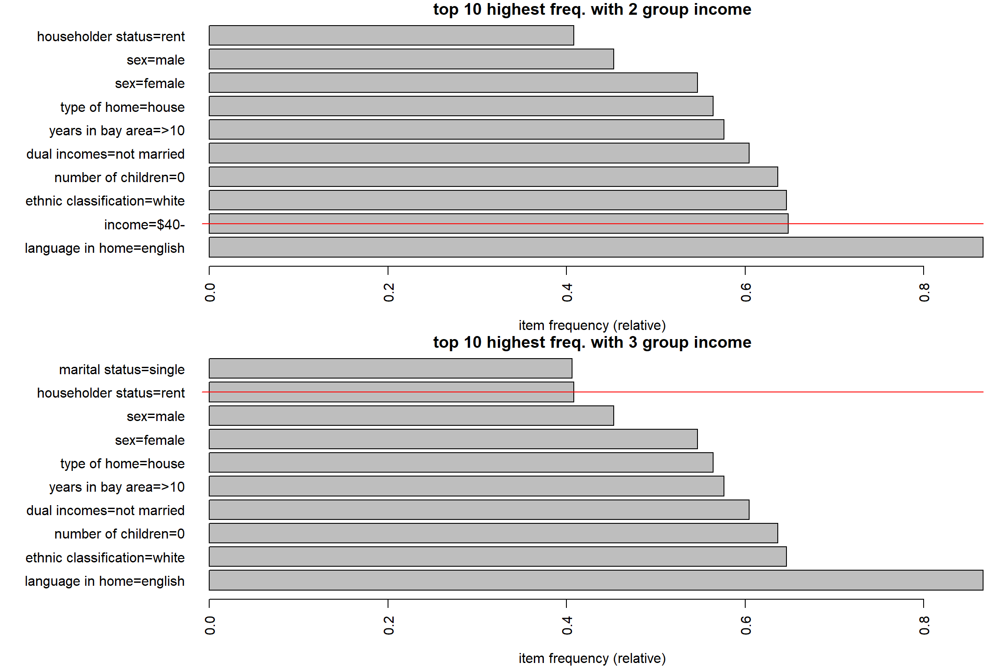
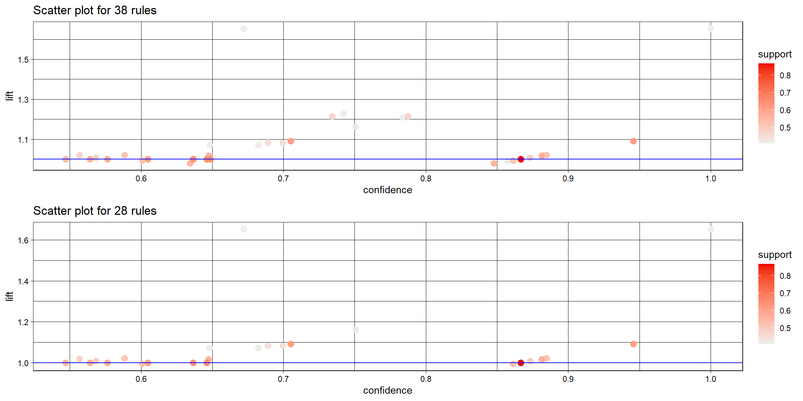
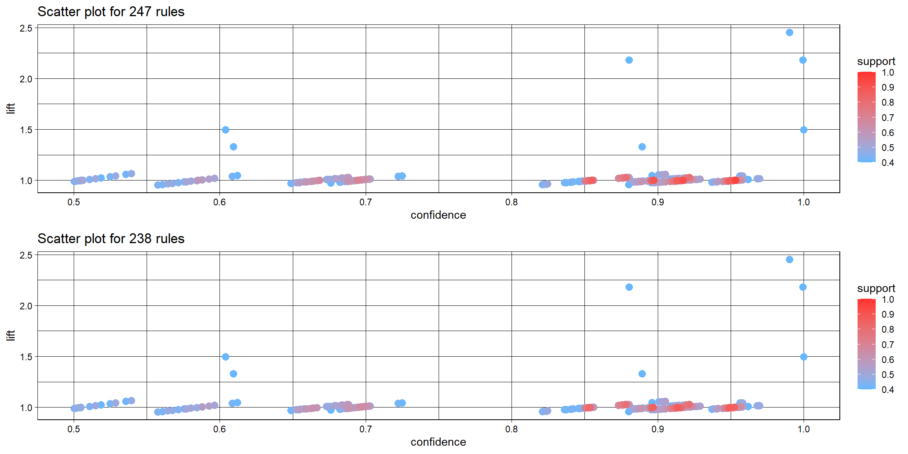
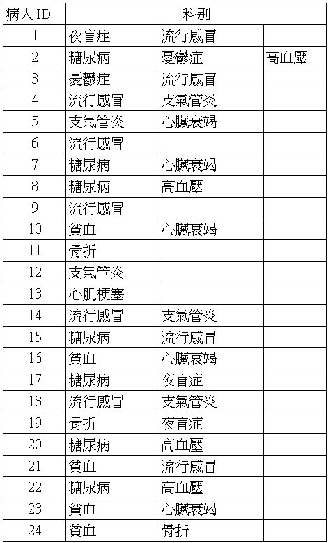
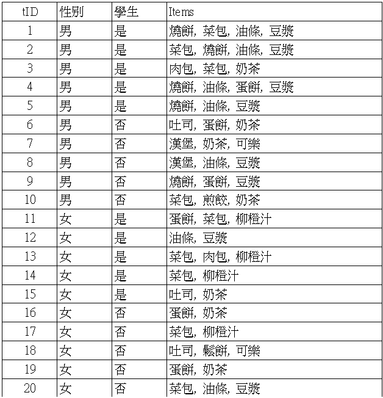
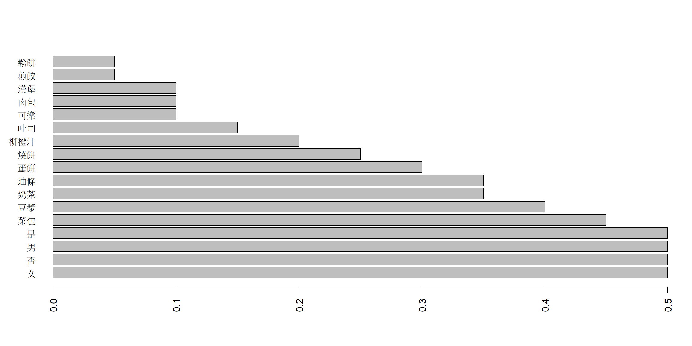

Sec 4 Self-learning
library(arules)
library(arulesViz)
library(ggplot2)
library(cowplot)
library(kableExtra)
library(huxtable)表格輸出設定，因為gitbook會把寬的表格給cut掉
print.rule.table <- function(rule, sub=F, ...,
sort=T, sortBy='lift',
all=F, headN=5,
select=F, selected,
digits=2, scroll=F, kable=T){
if(sub) out <- subset(rule, ...) else out <- rule
if(length(out)==0) message('no rules in this condition.') else {
if(sort) out <- sort(out, by=sortBy) else out <- rule
if(all) out <- out else out <- head(out, headN)
if(select){
if (missing(selected)) warning("selected column should be specified.") else
out <- DATAFRAME(out)[, c("LHS", "RHS", selected)]
} else out <- DATAFRAME(out)
if(kable){
out <- format(out, digits=digits) |> knitr::kable()
if(scroll){
out <- out |>
kable_styling() |>
scroll_box(width = "100%", box_css = "border: 0px;")
}
} else out <- format(out, digits=digits)
return(out)
}
}比較不同的規則，列出相同條件下，不同方法取出的規則
compare.rule <- function(rule1, rule2, ...){
row1 <- subset(rule1@quality, ...) |> rownames()
row2 <- subset(rule2@quality, ...) |> rownames()
list(rule1[row1], rule2[row2])
}映射滿足條件的欄位
mapping <- function(df, rangeVec, tagetCol){
df |>
as_hux() |>
map_background_color(everywhere, tagetCol,
by_ranges(rangeVec, c(NA, '#FEF9E7', NA))) |>
map_text_color(everywhere, tagetCol,
by_ranges(rangeVec, c(NA, '#212F3C', NA)))
}4.1 check details of Income data set
Using package dataset “Income”, and check package PDF manual for details, and explain the code via markdown.
Income: 交易物件(transactions object)，包含6876筆交易、50個項目(隸屬於14個變數)income,sex,marital status,age,education,occupation,years in bay area,dual incomes,number in household,number of children,householder status,type of home,ethnic classification,language in home
- 資料處理:
- 1. 移除包含遺失值的資料
- 2. 以中位數將順序尺度(ordinal)變數分為兩類
data("IncomeESL")
cum.freq <- function(df){
var.ord.fac <- sapply(df, is.ordered)
sapply(df[,var.ord.fac], table)
}
cum.freq(IncomeESL)## $income
##
## [0,10) [10,15) [15,20) [20,25) [25,30) [30,40) [40,50) [50,75) 75+
## 1745 775 667 813 722 1110 969 1308 884
##
## $age
##
## 14-17 18-24 25-34 35-44 45-54 55-64 65+
## 878 2129 2249 1615 922 640 560
##
## $education
##
## grade <9 grades 9-11 high school graduate
## 264 1046 2041
## college (1-3 years) college graduate graduate study
## 3066 1524 966
##
## $`years in bay area`
##
## <1 1-3 4-6 7-10 >10
## 270 1042 686 900 5182
##
## $`number in household`
##
## 1 2 3 4 5 6 7 8 9+
## 1620 2664 1670 1526 686 239 105 56 52
##
## $`number of children`
##
## 0 1 2 3 4 5 6 7 8 9+
## 5724 1506 1148 412 117 46 27 8 2 3## remove incomplete cases
IncomeESL <- IncomeESL[complete.cases(IncomeESL), ]
## preparing the data set
IncomeESL[["income"]] <- factor((as.numeric(IncomeESL[["income"]]) > 6) +1,
levels = 1 : 2 , labels = c("$0-$40,000", "$40,000+"))
IncomeESL[["age"]] <- factor((as.numeric(IncomeESL[["age"]]) > 3) +1,
levels = 1 : 2 , labels = c("14-34", "35+"))
IncomeESL[["education"]] <- factor((as.numeric(IncomeESL[["education"]]) > 4) +1,
levels = 1 : 2 , labels = c("no college graduate", "college graduate"))
IncomeESL[["years in bay area"]] <- factor(
(as.numeric(IncomeESL[["years in bay area"]]) > 4) +1,
levels = 1 : 2 , labels = c("1-9", "10+"))
IncomeESL[["number in household"]] <- factor(
(as.numeric(IncomeESL[["number in household"]]) > 3) +1,
levels = 1 : 2 , labels = c("1", "2+"))
IncomeESL[["number of children"]] <- factor(
(as.numeric(IncomeESL[["number of children"]]) > 1) +0,
levels = 0 : 1 , labels = c("0", "1+"))
## creating transactions
Income <- transactions(IncomeESL)4.2 [compare different grouping] regroup income into 2 levels
Use “IncomeESL”, merge income into two levels c(“$40-”,“$40+”). Compare your results.
- 重新切分 \(\to\) 類似商品層級
- e.g. 衣服 \(\to\) 長袖、短袖、外套、…
4.2.1 explore data
對 income 變數進行重新分組，該變數共9組，各組個數如下
## [1] "[0,10)" "[10,15)" "[15,20)" "[20,25)" "[25,30)" "[30,40)" "[40,50)"
## [8] "[50,75)" "75+"##
## [0,10) [10,15) [15,20) [20,25) [25,30) [30,40) [40,50) [50,75) 75+
## 1745 775 667 813 722 1110 969 1308 884比較把 income 重新分為2組($40-, $40+)和3組($20-, $20-$40, $40+)對探勘關聯規則有甚麼影響
df.2g <- df.3g <- IncomeESL
df.2g[["income"]] <- factor((as.numeric(df.2g[["income"]]) > 6) +1, levels = 1:2 , labels = c("$40-", "$40+"))
# table(df.2g$income)
Income.2g <- as(df.2g, 'transactions')
df.3g[["income"]] <- factor(
ifelse(as.numeric(df.3g[["income"]]) < 4, 1,
ifelse(as.numeric(df.3g[["income"]]) < 7, 2, 3)),
levels = 1:3 , labels = c("$20-", "$20-$40", "$40+"))
# table(df.3g$income)
Income.3g <- as(df.3g, 'transactions')- 下面兩張圖分別是 income 分成2組和3組時，次數最多的10個項目，主要差別用紅線標記
- 分成2組時，income = $40- 為第2高
- 分成3組時，income 沒有在前10名內
par(mfrow=c(2,1), mar=c(4,3,1,1))
itemFrequencyPlot(Income.2g, topN=10, horiz=T, main='top 10 highest freq. with 2 group income')
abline(h=1.9, col='red')
itemFrequencyPlot(Income.3g, topN=10, horiz=T, main='top 10 highest freq. with 3 group income')
abline(h=10.3, col='red')
4.2.2 explore rule
- 設定最小支持度為0.4、信賴度0.5: 保留常見的規則
rule.2g <- apriori(Income.2g, parameter = list(support = 0.4, confidence = 0.5))
rule.3g <- apriori(Income.3g, parameter = list(support = 0.4, confidence = 0.5))- 不同項目集個數的規則數 (RHS+LHS)
- 2組: 38個規則
- 3組: 28個規則
## sizes
## 1 2 3
## 8 24 6## sizes
## 1 2 3
## 7 18 3-
以增益度(lift)排序，顯示前5高的規則
- 兩種分組的前2個規則相同
| LHS | RHS | support | confidence | coverage | lift | count | |
|---|---|---|---|---|---|---|---|
| 9 | {marital status=single} | {dual incomes=not married} | 0.41 | 1.00 | 0.41 | 1.7 | 3654 |
| 10 | {dual incomes=not married} | {marital status=single} | 0.41 | 0.67 | 0.60 | 1.7 | 3654 |
| 35 | {income=$40-,language in home=english} | {dual incomes=not married} | 0.41 | 0.74 | 0.55 | 1.2 | 3670 |
| 20 | {income=$40-} | {dual incomes=not married} | 0.48 | 0.73 | 0.65 | 1.2 | 4282 |
| 19 | {dual incomes=not married} | {income=$40-} | 0.48 | 0.79 | 0.60 | 1.2 | 4282 |
| LHS | RHS | support | confidence | coverage | lift | count | |
|---|---|---|---|---|---|---|---|
| 8 | {marital status=single} | {dual incomes=not married} | 0.41 | 1.00 | 0.41 | 1.7 | 3654 |
| 9 | {dual incomes=not married} | {marital status=single} | 0.41 | 0.67 | 0.60 | 1.7 | 3654 |
| 27 | {number of children=0,language in home=english} | {ethnic classification=white} | 0.42 | 0.75 | 0.56 | 1.2 | 3787 |
| 26 | {number of children=0,ethnic classification=white} | {language in home=english} | 0.42 | 0.95 | 0.45 | 1.1 | 3787 |
| 24 | {ethnic classification=white} | {language in home=english} | 0.61 | 0.95 | 0.65 | 1.1 | 5495 |
-
分成2組(上)和3組(下)時的分布圖
- 多出來的10個規則大概分布在信賴度 = 0.65 和 0.75 處
par(mfrow=c(2,1), mar=c(3,3,1,1))
p1 <- plot(rule.2g, measure=c("confidence","lift"), shading="support")+
geom_point(size=3) + geom_hline(yintercept = 1, col='blue')
p2 <- plot(rule.3g, measure=c("confidence","lift"), shading="support")+
geom_point(size=3) + geom_hline(yintercept = 1, col='blue')
plot_grid(p1, p2, nrow=2)
-
檢視信賴度Range=(0.7, 0.8)且增益度Range=(1.1, 1.3)處的規則(目測約5個)
- 分成2組多出的規則為前4筆
results <- compare.rule(rule.2g, rule.3g, confidence>0.7 & confidence<0.8 & lift>1.1 & lift<1.3)
print.rule.table(results[[1]], all=T, scroll=T)
print.rule.table(results[[2]], all=T, scroll=T)| LHS | RHS | support | confidence | coverage | lift | count | |
|---|---|---|---|---|---|---|---|
| 35 | {income=$40-,language in home=english} | {dual incomes=not married} | 0.41 | 0.74 | 0.55 | 1.2 | 3670 |
| 20 | {income=$40-} | {dual incomes=not married} | 0.48 | 0.73 | 0.65 | 1.2 | 4282 |
| 19 | {dual incomes=not married} | {income=$40-} | 0.48 | 0.79 | 0.60 | 1.2 | 4282 |
| 34 | {dual incomes=not married,language in home=english} | {income=$40-} | 0.41 | 0.78 | 0.52 | 1.2 | 3670 |
| 37 | {number of children=0,language in home=english} | {ethnic classification=white} | 0.42 | 0.75 | 0.56 | 1.2 | 3787 |
| LHS | RHS | support | confidence | coverage | lift | count | |
|---|---|---|---|---|---|---|---|
| 27 | {number of children=0,language in home=english} | {ethnic classification=white} | 0.42 | 0.75 | 0.56 | 1.2 | 3787 |
4.3 [compare different algorithm] mine rule of AdultUCI data set
因為
fim4r載不了，所以只比較apriori和eclat
Importing built-in data “AdultUCI” and mining rules
4.3.1 details of data
AdultUCI資料包含成人資料庫(人口普查收入資料庫)的問卷資料，包含- 48,842個觀察值
- 15個變數: age, workclass, fnlwgt, education, education-num, marital-status, occupation, relationship, race, sex, capital-gain, capital-loss, hours-per-week, native-country, income
Adult資料為交易物件，包含- 48,842筆交易
- 115個項目
- 資料處理如下
- 移除連續特徵
fnlwgt(final weight) - 移除
education-num，因為它只是education的數值表示 - 年齡(age)分為
Young(0-25),Middle-aged(26-45),Senior(46-65)和Old(66+) - 每周工作時間(hours-per-week)分為
Part-time(0-25),Full-time(25-40),Over-time(40-60)和Too-much(60+) - 資本收益和損失(capital-gain / capital-loss)分為
None(0),Low(0 < 大於0的數值之中位數 < 最大值) andHigh( \(\geq\) 最大值)- capital-gain: 大於0的數值之中位數=7298，分組為(-Inf,0], (0,7.3e+03], (7.3e+03, Inf]
- capital-loss: 大於0的數值之中位數=1887，分組為(-Inf,0], (0,1.89e+03], (1.89e+03, Inf]
- 移除連續特徵
data("AdultUCI")
## remove attributes
AdultUCI[["fnlwgt"]] <- NULL
AdultUCI[["education-num"]] <- NULL
## map metric attributes
# min=17, max=90
AdultUCI[["age"]] <- ordered(cut(AdultUCI[["age"]], c(15, 25, 45, 65, 100)),
labels = c("Young", "Middle-aged", "Senior", "Old"))
# min=1, max=99
AdultUCI[["hours-per-week"]] <- ordered(cut(AdultUCI[["hours-per-week"]],
c(0,25,40,60,168)),
labels = c("Part-time", "Full-time", "Over-time", "Workaholic"))
# min=0, max=99999
AdultUCI[["capital-gain"]] <- ordered(cut(AdultUCI[["capital-gain"]],
c(-Inf,0,median(AdultUCI[["capital-gain"]][AdultUCI[["capital-gain"]] > 0]), Inf)), labels = c("None", "Low", "High"))
AdultUCI[["capital-loss"]] <- ordered(cut(AdultUCI[["capital-loss"]],
c(-Inf,0, median(AdultUCI[["capital-loss"]][AdultUCI[["capital-loss"]] > 0]), Inf)), labels = c("None", "Low", "High"))
## create transactions
Adult <- transactions(AdultUCI)cut(x, breaks, ...): 把x切分成不同的區間
##
## (0,2] (2,4] (4,6] (6,8]
## 10 8 15 8##
## [0,2) [2,4) [4,6) [6,8)
## 13 11 13 84.3.3 explore rule
- 設定最小支持度為0.4、信賴度0.5: 保留常見的規則
calc.time <- function(code){
set.seed(123)
t1 <- Sys.time()
code
t2 <- Sys.time()
return(t2-t1)
}
# Apriori
# rule.apriori <- apriori(Adult, parameter = list(support = 0.4, confidence = 0.5))
t1 <- calc.time(rule.apriori <- apriori(Adult, parameter = list(support = 0.4, confidence = 0.5)))
# Eclat
itemset.eclat <- eclat(Adult, parameter = list(supp = 0.4, maxlen=5))
# rule.eclat <- ruleInduction(itemset.eclat, confidence = 0.5)
t2 <- calc.time(rule.eclat <- ruleInduction(itemset.eclat, confidence = 0.5))
# FP-Growth
# rule.fpgrowth <- fim4r(Adult, method = "fpgrowth", target = "rules", supp = .7, conf = .8)- 兩種演算法的運算時間
| Algorithm | Time (sec) |
|---|---|
| apriori | 0.06773 |
| eclat | 0.02415 |
-
apriori 和 eclat 的分布圖
- 無明顯差異
- 相差 9 個規則
p1 <- plot(rule.apriori, measure=c("confidence","lift"), shading="support")+
geom_point(size=3) + scale_colour_gradient(low='steelblue1', high='firebrick1', limits=c(0.4,1))
p2 <- plot(rule.eclat, measure=c("confidence","lift"), shading="support")+
geom_point(size=3) + scale_colour_gradient(low='steelblue1', high='firebrick1', limits=c(0.4,1))
plot_grid(p1, p2, nrow=2)
-
以支持度 (support) 排序，顯示前5高的規則
- eclat 的 LHS 沒有空集合
- eclat 沒有 count 和 coverage
| LHS | RHS | support | confidence | coverage | lift | count | |
|---|---|---|---|---|---|---|---|
| 9 | {} | {capital-loss=None} | 0.95 | 0.95 | 1.00 | 1 | 46560 |
| 8 | {} | {capital-gain=None} | 0.92 | 0.92 | 1.00 | 1 | 44807 |
| 7 | {} | {native-country=United-States} | 0.90 | 0.90 | 1.00 | 1 | 43832 |
| 72 | {capital-gain=None} | {capital-loss=None} | 0.87 | 0.95 | 0.92 | 1 | 42525 |
| 73 | {capital-loss=None} | {capital-gain=None} | 0.87 | 0.91 | 0.95 | 1 | 42525 |
| LHS | RHS | support | confidence | lift | |
|---|---|---|---|---|---|
| 246 | {capital-loss=None} | {capital-gain=None} | 0.87 | 0.91 | 1 |
| 247 | {capital-gain=None} | {capital-loss=None} | 0.87 | 0.95 | 1 |
| 242 | {native-country=United-States} | {capital-loss=None} | 0.85 | 0.95 | 1 |
| 243 | {capital-loss=None} | {native-country=United-States} | 0.85 | 0.90 | 1 |
| 244 | {native-country=United-States} | {capital-gain=None} | 0.82 | 0.92 | 1 |
-
以信賴度 (confidence) 排序，顯示前5高的規則
- 兩種演算法的規則相同
print.rule.table(rule.apriori, sortBy = 'confidence', scroll = T)
print.rule.table(rule.eclat, sortBy = 'confidence')| LHS | RHS | support | confidence | coverage | lift | count | |
|---|---|---|---|---|---|---|---|
| 12 | {relationship=Husband} | {sex=Male} | 0.4 | 1.00 | 0.40 | 1.5 | 19715 |
| 74 | {marital-status=Married-civ-spouse,relationship=Husband} | {sex=Male} | 0.4 | 1.00 | 0.40 | 1.5 | 19703 |
| 10 | {relationship=Husband} | {marital-status=Married-civ-spouse} | 0.4 | 1.00 | 0.40 | 2.2 | 19704 |
| 75 | {relationship=Husband,sex=Male} | {marital-status=Married-civ-spouse} | 0.4 | 1.00 | 0.40 | 2.2 | 19703 |
| 76 | {marital-status=Married-civ-spouse,sex=Male} | {relationship=Husband} | 0.4 | 0.99 | 0.41 | 2.5 | 19703 |
| LHS | RHS | support | confidence | lift | |
|---|---|---|---|---|---|
| 5 | {relationship=Husband} | {sex=Male} | 0.4 | 1.00 | 1.5 |
| 3 | {marital-status=Married-civ-spouse,relationship=Husband} | {sex=Male} | 0.4 | 1.00 | 1.5 |
| 6 | {relationship=Husband} | {marital-status=Married-civ-spouse} | 0.4 | 1.00 | 2.2 |
| 1 | {relationship=Husband,sex=Male} | {marital-status=Married-civ-spouse} | 0.4 | 1.00 | 2.2 |
| 2 | {marital-status=Married-civ-spouse,sex=Male} | {relationship=Husband} | 0.4 | 0.99 | 2.5 |
-
以增益度 (lift) 排序，顯示前5高的規則
- 兩種演算法的規則相同
print.rule.table(rule.apriori, sortBy = 'lift', scroll = T)
print.rule.table(rule.eclat, sortBy = 'lift')| LHS | RHS | support | confidence | coverage | lift | count | |
|---|---|---|---|---|---|---|---|
| 76 | {marital-status=Married-civ-spouse,sex=Male} | {relationship=Husband} | 0.4 | 0.99 | 0.41 | 2.5 | 19703 |
| 11 | {marital-status=Married-civ-spouse} | {relationship=Husband} | 0.4 | 0.88 | 0.46 | 2.2 | 19704 |
| 10 | {relationship=Husband} | {marital-status=Married-civ-spouse} | 0.4 | 1.00 | 0.40 | 2.2 | 19704 |
| 75 | {relationship=Husband,sex=Male} | {marital-status=Married-civ-spouse} | 0.4 | 1.00 | 0.40 | 2.2 | 19703 |
| 13 | {sex=Male} | {relationship=Husband} | 0.4 | 0.60 | 0.67 | 1.5 | 19715 |
| LHS | RHS | support | confidence | lift | |
|---|---|---|---|---|---|
| 2 | {marital-status=Married-civ-spouse,sex=Male} | {relationship=Husband} | 0.4 | 0.99 | 2.5 |
| 6 | {relationship=Husband} | {marital-status=Married-civ-spouse} | 0.4 | 1.00 | 2.2 |
| 7 | {marital-status=Married-civ-spouse} | {relationship=Husband} | 0.4 | 0.88 | 2.2 |
| 1 | {relationship=Husband,sex=Male} | {marital-status=Married-civ-spouse} | 0.4 | 1.00 | 2.2 |
| 4 | {sex=Male} | {relationship=Husband} | 0.4 | 0.60 | 1.5 |
4.3.4 conclusion
-
apriori 比 eclat 多出來的 9 個規則為 LHS 是空集合的規則
| LHS | RHS | support | confidence | coverage | lift | count | |
|---|---|---|---|---|---|---|---|
| 1 | {} | {age=Middle-aged} | 0.51 | 0.51 | 1 | 1 | 24671 |
| 2 | {} | {income=small} | 0.51 | 0.51 | 1 | 1 | 24720 |
| 5 | {} | {workclass=Private} | 0.69 | 0.69 | 1 | 1 | 33906 |
| 6 | {} | {race=White} | 0.86 | 0.86 | 1 | 1 | 41762 |
| 7 | {} | {native-country=United-States} | 0.90 | 0.90 | 1 | 1 | 43832 |
| 8 | {} | {capital-gain=None} | 0.92 | 0.92 | 1 | 1 | 44807 |
| 9 | {} | {capital-loss=None} | 0.95 | 0.95 | 1 | 1 | 46560 |
| 3 | {} | {hours-per-week=Full-time} | 0.59 | 0.59 | 1 | 1 | 28577 |
| 4 | {} | {sex=Male} | 0.67 | 0.67 | 1 | 1 | 32650 |
- 相同條件下 eclat 的運算速度較快
4.4 就診紀錄
下表紀錄了24位患者近兩年內的就診紀錄，請根據資料回答下列問題

df <- read.csv('data/RA HW1-1.csv', encoding = 'UTF-8')
colnames(df) <- c('ID', paste0('sick', seq(3)))
library(reshape2)
df <- melt(df, id="ID")
df <- df[,-2]
df <- df[!df$value=="",]-
共 10 種疾病
## [1] "夜盲症" "糖尿病" "憂鬱症" "流行感冒" "支氣管炎" "貧血"
## [7] "骨折" "心肌梗塞" "心臟衰竭" "高血壓"-
資料框架(左) vs. 交易物件(右) 以第2個病人為例
dat=split(as.factor(df$value),as.factor(df$ID))
sick <- transactions(dat)
knitr::kable(list(df[df$ID==2,], DATAFRAME(sick) |> head(3)))
|
|
-
以支持度最低為 0.1、信賴度最低為 0.01、項目集最多 3 個，探勘規則
-
總共 14 條，包含 1 個項目的規則 8 條，包含 2 個項目的規則 6 條
## set of 14 rules
## sizes
## 1 2
## 8 6- 請列出所有的 k=1 項目集，並計算其支持度。
rule[size(lhs(rule))==0] |>
print.rule.table(sortBy = 'support', all=T) |>
column_spec(4, color = '#212F3C', background = '#FEF9E7')| LHS | RHS | support | confidence | coverage | lift | count | |
|---|---|---|---|---|---|---|---|
| 8 | {} | {流行感冒} | 0.38 | 0.38 | 1 | 1 | 9 |
| 7 | {} | {糖尿病} | 0.29 | 0.29 | 1 | 1 | 7 |
| 4 | {} | {支氣管炎} | 0.21 | 0.21 | 1 | 1 | 5 |
| 5 | {} | {心臟衰竭} | 0.21 | 0.21 | 1 | 1 | 5 |
| 6 | {} | {貧血} | 0.21 | 0.21 | 1 | 1 | 5 |
| 3 | {} | {高血壓} | 0.17 | 0.17 | 1 | 1 | 4 |
| 1 | {} | {骨折} | 0.12 | 0.12 | 1 | 1 | 3 |
| 2 | {} | {夜盲症} | 0.12 | 0.12 | 1 | 1 | 3 |
- 在 k=2 項目集中，請列出包含「糖尿病」之項目集與其所對應的支持度。
rule[size(lhs(rule))+size(rhs(rule))==2] |>
subset(subset=lhs %in% '糖尿病' | rhs %in% '糖尿病') |>
print.rule.table(all=T, sort = F) |>
column_spec(4, color = '#212F3C', background = '#FEF9E7')| LHS | RHS | support | confidence | coverage | lift | count | |
|---|---|---|---|---|---|---|---|
| 9 | {高血壓} | {糖尿病} | 0.17 | 1.00 | 0.17 | 3.4 | 4 |
| 10 | {糖尿病} | {高血壓} | 0.17 | 0.57 | 0.29 | 3.4 | 4 |
- 在 k=3 項目集中，請找出所有支持度高於0.2之規則。
-
支持度最低 0.1、信賴度最低 0.01 下沒有 k=3 的項目集
## set of 0 rules-
放寬條件，找出 k=3 的項目集，沒有支持度高於 0.2 的規則
## sizes
## 1 2 3
## 10 28 3rule1[size(lhs(rule1))+size(rhs(rule1))==3] |>
print.rule.table(all=T) |>
column_spec(4, color = '#212F3C', background = '#FEF9E7')| LHS | RHS | support | confidence | coverage | lift | count | |
|---|---|---|---|---|---|---|---|
| 40 | {憂鬱症,糖尿病} | {高血壓} | 0.042 | 1.00 | 0.042 | 6.0 | 1 |
| 39 | {高血壓,憂鬱症} | {糖尿病} | 0.042 | 1.00 | 0.042 | 3.4 | 1 |
| 41 | {高血壓,糖尿病} | {憂鬱症} | 0.042 | 0.25 | 0.167 | 3.0 | 1 |
- 根據(3)所找出之高頻項目集，請計算「糖尿病」對於同項目集中之另一項目之信賴度與增益。假設信賴度的門檻值為0.4，在此是否存在任何顯著之關聯規則？
k=3 項目集為 {憂鬱症, 糖尿病, 高血壓}
-
信賴度最低 0.4 下，{糖尿病} \(\to\) {高血壓}為顯著的關聯規則
options(huxtable.bookdown = FALSE)
rule1[size(lhs(rule1))+size(rhs(rule1))==2] |>
subset(rule1, subset = lhs %oin% "糖尿病" & rhs %in% c("憂鬱症", "高血壓")) |>
DATAFRAME() |>
mapping(c(0.4, 1.1), "confidence")| LHS | RHS | support | confidence | coverage | lift | count |
|---|---|---|---|---|---|---|
| {糖尿病} | {憂鬱症} | 0.0417 | 0.143 | 0.292 | 1.71 | 1 |
| {糖尿病} | {高血壓} | 0.167 | 0.571 | 0.292 | 3.43 | 4 |
- 請將(2)、(3)、(4)中之項目「糖尿病」依次替換為「貧血」、「高血壓」、「憂鬱症」、「夜盲症」與「流行感冒」，探討是否有任何顯著之關聯規則可被建立。
放寬條件後，k=3 項目集只有 {憂鬱症, 糖尿病, 高血壓}
-
信賴度最低 0.4 下，顯著的關聯規則有:
- {糖尿病} \(\to\) {高血壓} (Q4.)
- {憂鬱症} \(\to\) {高血壓}
- {憂鬱症} \(\to\) {糖尿病}
- {高血壓} \(\to\) {糖尿病}，conf = 1 表示有看高血壓的病人都有看過糖尿病 (obs. 2, 8, 20, 22)
| LHS | RHS | support | confidence | coverage | lift | count |
|---|---|---|---|---|---|---|
| {憂鬱症} | {高血壓} | 0.0417 | 0.5 | 0.0833 | 3 | 1 |
| {憂鬱症} | {糖尿病} | 0.0417 | 0.5 | 0.0833 | 1.71 | 1 |
| LHS | RHS | support | confidence | coverage | lift | count |
|---|---|---|---|---|---|---|
| {高血壓} | {憂鬱症} | 0.0417 | 0.25 | 0.167 | 3 | 1 |
| {高血壓} | {糖尿病} | 0.167 | 1 | 0.167 | 3.43 | 4 |
\[ conf(X\to Y)=\frac{P(X\cap Y)}{P(X)}>0.4\\ \Rightarrow P(X\cap Y)>0.4\cdot P(X) \]
因此\(sup(X\to Y)\)至少要\(0.4\cdot P(X)\)
-
計算\(sup(X)\cdot0.4\)，得到support至少要0.0168
| RHS | support | lower | |
|---|---|---|---|
| 10 | {流行感冒} | 0.375 | 0.15 |
| 9 | {糖尿病} | 0.292 | 0.12 |
| 6 | {支氣管炎} | 0.208 | 0.08 |
| 7 | {心臟衰竭} | 0.208 | 0.08 |
| 8 | {貧血} | 0.208 | 0.08 |
| 5 | {高血壓} | 0.167 | 0.07 |
| 3 | {骨折} | 0.125 | 0.05 |
| 4 | {夜盲症} | 0.125 | 0.05 |
| 2 | {憂鬱症} | 0.083 | 0.03 |
| 1 | {心肌梗塞} | 0.042 | 0.02 |
-
找 k=2 且 support最低0.015
print.rule.table(tmp, sub=T, confidence>0.4, all=T, sortBy = 'confidence') |>
column_spec(5, color = '#212F3C', background = '#FEF9E7')| LHS | RHS | support | confidence | coverage | lift | count | |
|---|---|---|---|---|---|---|---|
| 15 | {高血壓} | {糖尿病} | 0.167 | 1.00 | 0.167 | 3.4 | 4 |
| 19 | {支氣管炎} | {流行感冒} | 0.125 | 0.60 | 0.208 | 1.6 | 3 |
| 21 | {心臟衰竭} | {貧血} | 0.125 | 0.60 | 0.208 | 2.9 | 3 |
| 22 | {貧血} | {心臟衰竭} | 0.125 | 0.60 | 0.208 | 2.9 | 3 |
| 16 | {糖尿病} | {高血壓} | 0.167 | 0.57 | 0.292 | 3.4 | 4 |
| 1 | {憂鬱症} | {高血壓} | 0.042 | 0.50 | 0.083 | 3.0 | 1 |
| 3 | {憂鬱症} | {糖尿病} | 0.042 | 0.50 | 0.083 | 1.7 | 1 |
| 5 | {憂鬱症} | {流行感冒} | 0.042 | 0.50 | 0.083 | 1.3 | 1 |
4.5 早餐店購買紀錄
下表為某早餐店所統計之顧客交易紀錄，請根據資料回答下列問題 
df <- read.csv('data/RA HW1-2.csv', encoding = 'UTF-8')
colnames(df) <- c('ID', "sex", "stu", "items")
items <- lapply(strsplit(df$items, ","),
function(x) gsub(" ", "", x))
target <- df[rep(1:nrow(df), times = lengths(items)), -4]
for(i in 1:nrow(target)){
target$item[i] <- unlist(items)[i]
}-
共 13 種餐點
## [1] "燒餅" "菜包" "油條" "豆漿" "肉包" "奶茶" "蛋餅" "吐司"
## [9] "漢堡" "可樂" "煎餃" "柳橙汁" "鬆餅"-
資料框架(左) vs. 交易物件(右) 以第3個客人為例
dat=split(as.factor(c(target$item, target$sex, target$stu)),
as.factor(target$ID))
breakfast <- transactions(dat)
knitr::kable(list(df[df$ID==3,], DATAFRAME(breakfast) |> head(3)))
|
|
-
以支持度最低為 0.2、信賴度最低為 0.5、項目集最多 3 個，“性別”及”是否為學生”不會出現在右手邊，探勘規則
rule <- apriori(breakfast,
parameter = list(support=0.2, confidence=0.5, maxlen=3),
appearance = list(default="lhs",
rhs=unique(target$item)))-
總共 11 條，包含 2 個項目的規則 8 條，包含 3 個項目的規則 3 條
## set of 11 rules
## sizes
## 2 3
## 8 3- 請列出所有的 k=1 項目集，並計算其支持度。

- 在k=2 項目集中，請找出所有支持度高於0.2之規則。
rule[size(lhs(rule))+size(rhs(rule))==2] |>
print.rule.table(all=T, sortBy = "support") |>
column_spec(4, color = '#212F3C', background = '#FEF9E7')| LHS | RHS | support | confidence | coverage | lift | count | |
|---|---|---|---|---|---|---|---|
| 6 | {男} | {豆漿} | 0.30 | 0.6 | 0.5 | 1.5 | 6 |
| 8 | {是} | {菜包} | 0.30 | 0.6 | 0.5 | 1.3 | 6 |
| 1 | {男} | {燒餅} | 0.25 | 0.5 | 0.5 | 2.0 | 5 |
| 2 | {否} | {奶茶} | 0.25 | 0.5 | 0.5 | 1.4 | 5 |
| 3 | {是} | {油條} | 0.25 | 0.5 | 0.5 | 1.4 | 5 |
| 4 | {男} | {油條} | 0.25 | 0.5 | 0.5 | 1.4 | 5 |
| 5 | {是} | {豆漿} | 0.25 | 0.5 | 0.5 | 1.2 | 5 |
| 7 | {女} | {菜包} | 0.25 | 0.5 | 0.5 | 1.1 | 5 |
- 在k=3 項目集中，請找出所有支持度高於0.2之規則。
rule[size(lhs(rule))+size(rhs(rule))==3] |>
print.rule.table(all=T, sortBy = "support") |>
column_spec(4, color = '#212F3C', background = '#FEF9E7')| LHS | RHS | support | confidence | coverage | lift | count | |
|---|---|---|---|---|---|---|---|
| 9 | {男,是} | {燒餅} | 0.2 | 0.8 | 0.25 | 3.2 | 4 |
| 10 | {男,是} | {油條} | 0.2 | 0.8 | 0.25 | 2.3 | 4 |
| 11 | {男,是} | {豆漿} | 0.2 | 0.8 | 0.25 | 2.0 | 4 |
- 假設支持度門檻為0.2，信賴度門檻為0.5，請論述「菜包 \(\to\) 柳橙汁」之規則是否成立？
- 承題(4)，請論述「燒餅」 \(\to\) 「油條」、「豆漿」之規則是否成立？
| LHS | RHS | support | confidence | coverage | lift | count | |
|---|---|---|---|---|---|---|---|
| 6 | {男} | {豆漿} | 0.30 | 0.6 | 0.50 | 1.5 | 6 |
| 8 | {是} | {菜包} | 0.30 | 0.6 | 0.50 | 1.3 | 6 |
| 1 | {男} | {燒餅} | 0.25 | 0.5 | 0.50 | 2.0 | 5 |
| 2 | {否} | {奶茶} | 0.25 | 0.5 | 0.50 | 1.4 | 5 |
| 3 | {是} | {油條} | 0.25 | 0.5 | 0.50 | 1.4 | 5 |
| 4 | {男} | {油條} | 0.25 | 0.5 | 0.50 | 1.4 | 5 |
| 5 | {是} | {豆漿} | 0.25 | 0.5 | 0.50 | 1.2 | 5 |
| 7 | {女} | {菜包} | 0.25 | 0.5 | 0.50 | 1.1 | 5 |
| 9 | {男,是} | {燒餅} | 0.20 | 0.8 | 0.25 | 3.2 | 4 |
| 10 | {男,是} | {油條} | 0.20 | 0.8 | 0.25 | 2.3 | 4 |
| 11 | {男,是} | {豆漿} | 0.20 | 0.8 | 0.25 | 2.0 | 4 |
支持度門檻為0.2，信賴度門檻為0.5下，沒有「菜包 \(\to\) 柳橙汁」和「燒餅 \(\to\) 油條、豆漿」的規則
- 假設將分析範圍鎖定為男性顧客，請分別論述題(4) ~ (5)之規則是否成立？反之，若鎖定女性顧客，題(4) ~ (5)規則之成立性又為如何？
- 假設將分析範圍鎖定為非學生之顧客，請分別論述(4) ~ (5)之規則是否成立？反之，若鎖定學生顧客，題(4) ~ (5)規則之成立性又為如何？
Notice: 設定右手邊只會出現餐點後，餐點好像不會出現在左手邊
-
調低門檻值
test1 <- apriori(breakfast,
parameter = list(support=0.01, confidence=0.01, maxlen=3),
appearance = list(default="lhs", rhs=unique(target$item)))| LHS | RHS | support | confidence | coverage | lift | count | |
|---|---|---|---|---|---|---|---|
| 51 | {男} | {豆漿} | 0.30 | 0.6 | 0.5 | 1.50 | 6 |
| 54 | {是} | {菜包} | 0.30 | 0.6 | 0.5 | 1.33 | 6 |
| 35 | {男} | {燒餅} | 0.25 | 0.5 | 0.5 | 2.00 | 5 |
| 41 | {否} | {奶茶} | 0.25 | 0.5 | 0.5 | 1.43 | 5 |
| 46 | {是} | {油條} | 0.25 | 0.5 | 0.5 | 1.43 | 5 |
| 47 | {男} | {油條} | 0.25 | 0.5 | 0.5 | 1.43 | 5 |
| 50 | {是} | {豆漿} | 0.25 | 0.5 | 0.5 | 1.25 | 5 |
| 52 | {女} | {菜包} | 0.25 | 0.5 | 0.5 | 1.11 | 5 |
| 30 | {女} | {柳橙汁} | 0.20 | 0.4 | 0.5 | 2.00 | 4 |
| 34 | {是} | {燒餅} | 0.20 | 0.4 | 0.5 | 1.60 | 4 |
| 37 | {否} | {蛋餅} | 0.20 | 0.4 | 0.5 | 1.33 | 4 |
| 43 | {男} | {奶茶} | 0.20 | 0.4 | 0.5 | 1.14 | 4 |
| 55 | {男} | {菜包} | 0.20 | 0.4 | 0.5 | 0.89 | 4 |
| 32 | {是} | {柳橙汁} | 0.15 | 0.3 | 0.5 | 1.50 | 3 |
| 36 | {女} | {蛋餅} | 0.15 | 0.3 | 0.5 | 1.00 | 3 |
| 39 | {男} | {蛋餅} | 0.15 | 0.3 | 0.5 | 1.00 | 3 |
| 40 | {女} | {奶茶} | 0.15 | 0.3 | 0.5 | 0.86 | 3 |
| 49 | {否} | {豆漿} | 0.15 | 0.3 | 0.5 | 0.75 | 3 |
| 53 | {否} | {菜包} | 0.15 | 0.3 | 0.5 | 0.67 | 3 |
| 19 | {是} | {肉包} | 0.10 | 0.2 | 0.5 | 2.00 | 2 |
| 22 | {否} | {可樂} | 0.10 | 0.2 | 0.5 | 2.00 | 2 |
| 24 | {否} | {漢堡} | 0.10 | 0.2 | 0.5 | 2.00 | 2 |
| 25 | {男} | {漢堡} | 0.10 | 0.2 | 0.5 | 2.00 | 2 |
| 26 | {女} | {吐司} | 0.10 | 0.2 | 0.5 | 1.33 | 2 |
| 27 | {否} | {吐司} | 0.10 | 0.2 | 0.5 | 1.33 | 2 |
| 38 | {是} | {蛋餅} | 0.10 | 0.2 | 0.5 | 0.67 | 2 |
| 42 | {是} | {奶茶} | 0.10 | 0.2 | 0.5 | 0.57 | 2 |
| 44 | {女} | {油條} | 0.10 | 0.2 | 0.5 | 0.57 | 2 |
| 45 | {否} | {油條} | 0.10 | 0.2 | 0.5 | 0.57 | 2 |
| 48 | {女} | {豆漿} | 0.10 | 0.2 | 0.5 | 0.50 | 2 |
| 14 | {女} | {鬆餅} | 0.05 | 0.1 | 0.5 | 2.00 | 1 |
| 15 | {否} | {鬆餅} | 0.05 | 0.1 | 0.5 | 2.00 | 1 |
| 16 | {否} | {煎餃} | 0.05 | 0.1 | 0.5 | 2.00 | 1 |
| 17 | {男} | {煎餃} | 0.05 | 0.1 | 0.5 | 2.00 | 1 |
| 18 | {女} | {肉包} | 0.05 | 0.1 | 0.5 | 1.00 | 1 |
| 20 | {男} | {肉包} | 0.05 | 0.1 | 0.5 | 1.00 | 1 |
| 21 | {女} | {可樂} | 0.05 | 0.1 | 0.5 | 1.00 | 1 |
| 23 | {男} | {可樂} | 0.05 | 0.1 | 0.5 | 1.00 | 1 |
| 28 | {是} | {吐司} | 0.05 | 0.1 | 0.5 | 0.67 | 1 |
| 29 | {男} | {吐司} | 0.05 | 0.1 | 0.5 | 0.67 | 1 |
| 31 | {否} | {柳橙汁} | 0.05 | 0.1 | 0.5 | 0.50 | 1 |
| 33 | {否} | {燒餅} | 0.05 | 0.1 | 0.5 | 0.40 | 1 |
-
沒辦法設定兩邊
tryCatch(
expr = {
test2 <- apriori(breakfast,
parameter = list(support=0.01, confidence=0.01, maxlen=3),
appearance = list(
lhs=unique(c(target$item, target$sex, target$stu)),
rhs=unique(target$item)))
},
error = function(e) {
print(paste("Error：", e$message))
}
)## [1] "Error： The following items cannot be specified in multiple appearance locations: 燒餅, 菜包, 油條, 豆漿, 肉包, 奶茶, 蛋餅, 吐司, 漢堡, 可樂, 煎餃, 柳橙汁, 鬆餅"-
改設定左手邊，發現沒有規則，可能是因為沒有東西能放右手邊了
test3 <- apriori(breakfast,
parameter = list(support=0.01, confidence=0.01, maxlen=3),
appearance = list(
lhs=unique(c(target$item, target$sex, target$stu)),
default="rhs"))## set of 0 rules4.6 Groceries data
4.6.1 ??? \(\rightarrow\) item
- What are customers likely to buy before buying whole milk?
data("Groceries")
rules<-apriori(data=Groceries, parameter=list(supp=0.001,conf = 0.08),
appearance = list(default="lhs",rhs="whole milk"),
control = list(verbose=F))
rules<-sort(rules, decreasing=TRUE,by="confidence")
DATAFRAME(rules[1:5], separate=F) |> format(digits=2) |> knitr::kable()| rule | support | confidence | coverage | lift | count | |
|---|---|---|---|---|---|---|
| 196 | {rice,sugar} => {whole milk} | 0.0012 | 1 | 0.0012 | 3.9 | 12 |
| 323 | {canned fish,hygiene articles} => {whole milk} | 0.0011 | 1 | 0.0011 | 3.9 | 11 |
| 1643 | {root vegetables,butter,rice} => {whole milk} | 0.0010 | 1 | 0.0010 | 3.9 | 10 |
| 1705 | {root vegetables,whipped/sour cream,flour} => {whole milk} | 0.0017 | 1 | 0.0017 | 3.9 | 17 |
| 1716 | {butter,soft cheese,domestic eggs} => {whole milk} | 0.0010 | 1 | 0.0010 | 3.9 | 10 |
4.6.2 item \(\rightarrow\) ???
- What are customers likely to buy if they purchase whole milk?
rules<-apriori(data=Groceries, parameter=list(supp=0.001,conf = 0.15,minlen=2),
appearance = list(default="rhs",lhs="whole milk"),
control = list(verbose=F))
rules<-sort(rules, decreasing=TRUE,by="confidence")
DATAFRAME(rules[1:5], separate=F) |> format(digits=2) |> knitr::kable()| rule | support | confidence | coverage | lift | count | |
|---|---|---|---|---|---|---|
| 6 | {whole milk} => {other vegetables} | 0.075 | 0.29 | 0.26 | 1.5 | 736 |
| 5 | {whole milk} => {rolls/buns} | 0.057 | 0.22 | 0.26 | 1.2 | 557 |
| 4 | {whole milk} => {yogurt} | 0.056 | 0.22 | 0.26 | 1.6 | 551 |
| 2 | {whole milk} => {root vegetables} | 0.049 | 0.19 | 0.26 | 1.8 | 481 |
| 1 | {whole milk} => {tropical fruit} | 0.042 | 0.17 | 0.26 | 1.6 | 416 |